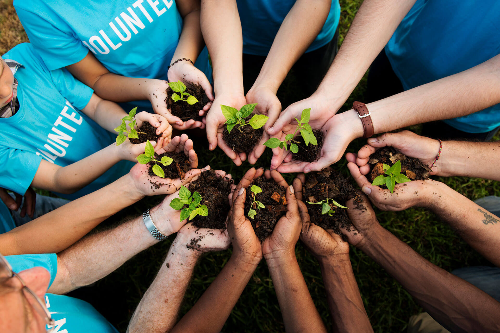
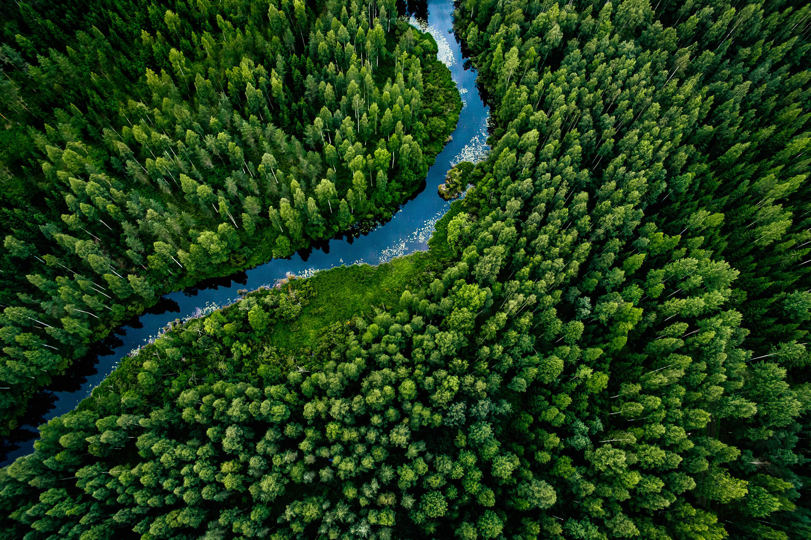

About Us
Empowering communities through education, creativity, and environmental stewardship.
Our Mission
Pro Hands is a non-profit organization committed to empowering communities across Jordan through education, environmental awareness, and skill-building. We utilize creative mediums like puppetry and theatre to engage youth and communities on vital environmental topics.
Education: Raising awareness about sustainability, eco-friendly practices, and environmental challenges facing Jordan and the region.
Empowerment: Building leadership skills among youth and underrepresented groups through workshops and hands-on projects.
Engagement: Creating meaningful dialogues and actions around environmental conservation within schools, universities, and local communities.


Our Vision
We envision a Jordan where communities lead by example, embracing sustainable practices and creating a ripple effect of environmental stewardship.
Our Core Values
- Inclusivity: Ensuring equal access to our programs for all genders, age groups, and communities, especially underserved areas across Jordan.
- Sustainability: Advocating for long-term, impactful solutions to Jordan's environmental challenges through education and actionable projects.
- Creativity: Leveraging art, performance, and social media to communicate complex environmental issues in an engaging and relatable way.
- Community Engagement: Involving local communities in the process of change through collaborative workshops, performances, and projects.
Join Us Now!
Become One Of Our Growing Family Of Volunteers To Protect Our Planet.